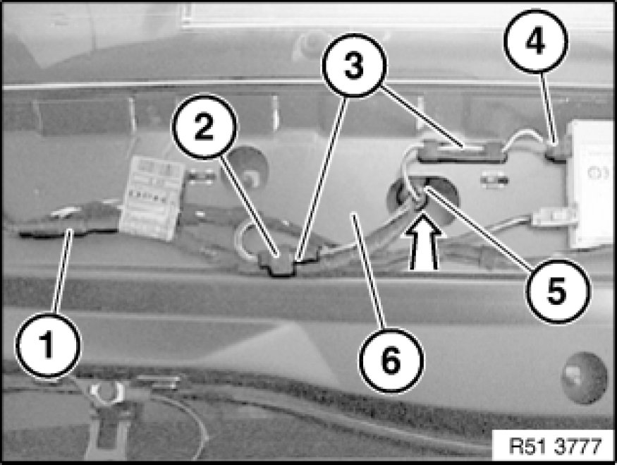
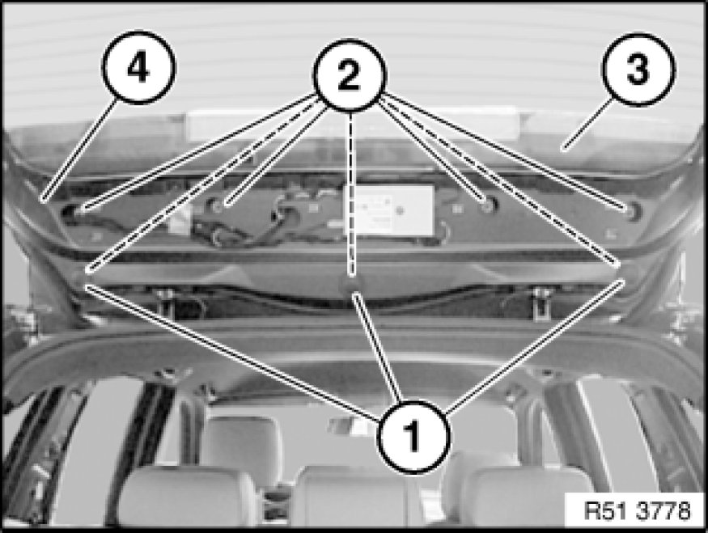
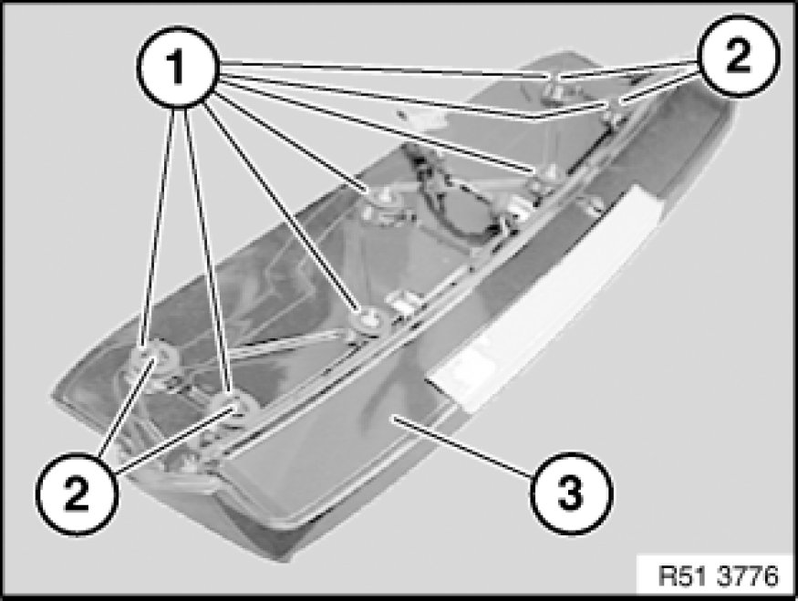

51 71 412 Removing and Installing Rear Spoiler
51 71 412 - Removing and installing rear spoiler

Necessary preliminary tasks:
- Remove trim for rear window frame at top Removing and Installing/Replacing Trim for Rear Window Frame at Top.

Detach hose in area (1).
Disconnect plug connection (2).
Unclip lines at points (3).
Disconnect plug connection (4).
Press rubber grommet (5) upwards out of rear lid (6).
Installation:
Make sure rubber grommet (5) is correctly seated.

Lever out rubber plug (1).
Unscrew nuts (2).
Tightening torque 51 71 2AZ Specifications.
Important!
Carefully remove rear spoiler (3) in upwards direction from rear lid (4) (with aid of a 2nd person) and place on a clean surface.
Note:
Lines may get caught as they are pulled out. If necessary, support lines as the are being fed out.

Installation:
Sealing washers (1) and side buffer stops must not be damaged.
Make sure there is a uniform gap all round.
If necessary, carry out height adjustment of rear spoiler (3) using adjusting screws (2).